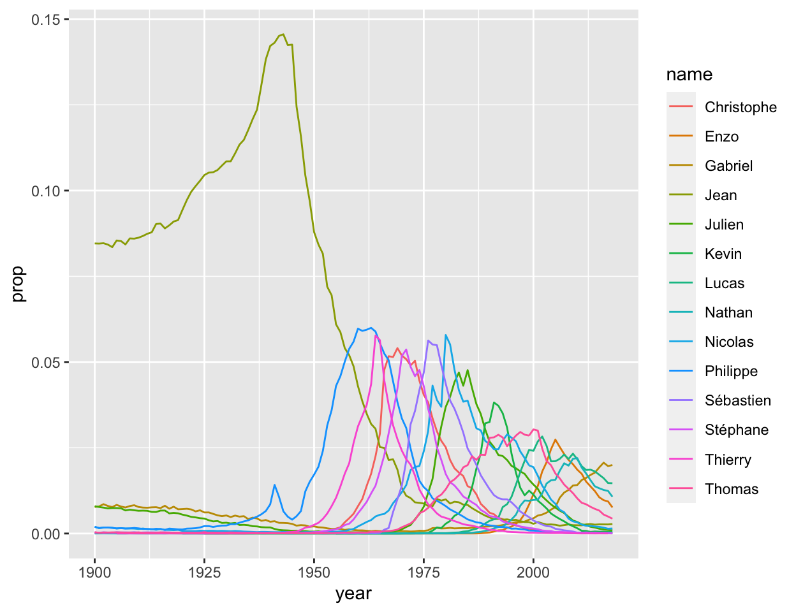

Dans cette étude de cas, vous allez identifier les prénoms les plus populaires de 1900 à 2018 En faisant cela, vous maîtriserez trois autres fonctions {dplyr} :
mutate(), group_by(), et summarise(), qui permettent d’utiliser vos données pour calculer de nouvelles variables et des statistiques récapitulativesCe sont quelques-unes des fonctions R les plus utiles pour la Data Science, et ce module fournit tout ce dont vous avez besoin pour les apprendre.
Ce module utilise des fonctions du package {tidyverse}, notamment des fonctions de {ggplot2}, {tibble} et {dplyr}, ainsi que le package {prenoms}. Tous ces packages ont été préinstallés et préchargés.
Cliquez sur le bouton “Suivant” pour commencer.
Utilisons prenoms pour répondre à une question : quels sont les prénoms les plus populaires de tous les temps en France ?
Pour y répondre, nous devons être plus précis : comment définissez-vous les prénoms “les plus populaires” ? Essayez de penser à plusieurs définitions, puis cliquez sur “Continue”. Nous proposerons également deux définitions.
Nous suggérons que nous nous concentrions sur deux définitions de populaire, une qui utilise des sommes et une qui utilise des rangs :
Revenons à notre question :
Utilisons prenoms pour répondre à la question : quels sont les prénoms les plus populaires de tous les temps ?
Chaque jeu de données que vous rencontrez contient et permet de trouver plus d’informations qu’il n’en affiche. Par exemple, prenoms n’affiche pas le nombre total d’enfants qui portaient un prénom donné, mais il contient cette information. Pour découvrir la découvrir, il faut opérer un calcul :
prenoms %>%
filter(name == "Margot", sex == "F") %>%
summarise(total = sum(n))## # A tibble: 1 x 1
## total
## <int>
## 1 42496{dplyr} propose trois fonctions qui peuvent vous aider à révéler les informations contenues dans vos données :
summarise()group_by()mutate()Tout comme select(), filter() et arrange(), ces fonctions prennent toutes un jeu de données comme premier argument et renvoient un nouveau jeu de données comme sortie, et nous utiliserons le pipe ( %>% ) oour les articuler.
Étudions chaque fonction et utilisons-les pour analyser la popularité au fur et à mesure.
summarise() prend un jeu de données et l’utilise pour calculer un nouveau jeu de données de statistiques agrégées..
Pour utiliser summarise(), passez-lui un jeu de données puis un ou plusieurs arguments nommés. Chaque argument nommé doit être défini sur une expression R qui génère une valeur unique. summarise résumera chaque argument nommé dans une colonne dans le nouveau jeu de données. Le nom de chaque argument deviendra le nom de la colonne, et la valeur retournée par l’argument deviendra le contenu de la colonne.
Nous avons utilisé summarise() ci-dessus pour calculer le nombre total de garçons prénommés “Margot”, mais complétons ce code pour calculer également :
max - le nombre maximum de garçons prénommés “Margot” en une seule annéemean - le nombre moyen de garçons prénommés “Margot” par anprenoms %>%
filter(name == "Margot", sex == "F") %>%
summarise(total = sum(n), max = max(n), mean = mean(n))## # A tibble: 1 x 3
## total max mean
## <int> <int> <dbl>
## 1 42496 1992 443.Ne laissez pas le code ci-dessus vous tromper. Le premier argument de summarise() est toujours un jeu de données, mais lorsque vous utilisez summarise() dans un pipe, le premier argument est fourni par l’opérateur %>%. Ici, le premier argument sera le jeu de données qui est retourné par prenoms %>% filter(name == "Margot", sex == "F").
Utilisez le bloc de code ci-dessous pour calculer trois statistiques :
Si vous ne parvenez pas à trouver la fonction R qui calculerait chaque statistique, cliquez sur le bouton “Solution”.
prenoms %>%
filter(name == "Marie", sex == "F") %>%
summarise(total = sum(n), max = max(n), mean = mean(n))Jusqu’à présent, nos exemples avec summarise() se sont appuyés sur sum(), max() et mean(). Mais vous pouvez utiliser n’importe quelle fonction dans summarise() tant qu’elle répond à ce critère : la fonction doit prendre un vecteur de valeurs en entrée et retourner une valeur unique en sortie. Les fonctions qui le font sont appelées fonctions de résumés et elles sont courantes dans le domaine des statistiques descriptives. Certaines des fonctions de résumé les plus utiles incluent :
mean(x), median(x), quantile(x, 0.25), min(x), et max(x)sd(x), var(x), IQR(x), et mad(x)first(x), nth(x, 2), et last(x)n_distinct(x) et n(), qui ne prend aucun argument entre ses parenthèses et renvoie le nombre de ligne du jeu de données (ou d’un sous groupe).sum(!is.na(x)), qui compte le nombre de “VRAIS” renvoyés par un test logique; mean(y == 0), qui renvoie la proportion de TRUE retournée par un test logique.Appliquons certaines de ces fonctions de résumés. Cliquez sur “Continue” pour tester votre compréhension.
“Aria” est un prénom très moderne qui semble être basé sur la série télévisée Game of Thrones (créée le 17 avril 2011). Dans le bloc de code ci-dessous, filtrez les prénoms de bébé uniquement sur les lignes dont le nom est == “Aria”. Ensuite, utilisez summarise() et une fonction de résumé pour renvoyer la première valeur de year dans le jeu de données.
prenoms %>%
filter(name == "Aria") %>%
summarise(year = first(year))Dans le bloc ci-dessous, utilisez summarise() et une fonction de résumé pour renvoyer un jeu de données avec deux colonnes :
n qui affiche le nombre total de lignes dans prenomsdistinct qui affiche le nombre de prénoms distincts dans prenomsA votre avis, ces chiffres seront-ils différents ? Pourquoi ?
prenoms %>%
summarise(n = n(), distinct = n_distinct(name))"Bon travail ! Les deux nombres sont différents car la plupart des prénoms apparaissent plus d'une fois dans le jeu de données. Ils apparaissent une fois pour chaque année au cours de laquelle ils ont été utilisés."Comment pouvons-nous appliquer summarise() pour trouver les prénoms les plus populaires dans prenoms ? Vous avez vu comment calculer le nombre total d’enfants qui portent un prénom donné, ce qui fournit l’une de nos mesures de popularité (le nombre total d’enfants qui ont un prénom donné) :
prenoms %>%
filter(name == "Vincent", sex == "M") %>%
summarise(total = sum(n))Cependant, nous avons dû isoler ce prénom du reste des données pour calculer ce nombre. Vous pourriez imaginer écrire un programme qui étudie chaque prénom un à un et :
Au final, le programme pourrait regrouper tous les résultats dans un seul jeu de données. Cependant, vous n’avez pas besoin d’écrire un tel programme ; c’est le travail de la fonction group_by() de {dplyr}.
group_by() prend un jeu de données puis les noms d’une ou plusieurs colonnes de ce jeu de données. Il renvoie une copie du jeu de données qui a été “groupé” en ensembles de lignes qui partagent des combinaisons identiques de valeurs dans les colonnes spécifiées.
Par exemple, le résultat ci-dessous est regroupé en lignes qui ont la même combinaison des valeurs year et sex : les garçons en 1900 sont traités comme un groupe, les filles en 1900 comme un autre groupe, etc.
prenoms %>%
group_by(year, sex)## # A tibble: 248,518 x 5
## # Groups: year, sex [238]
## year sex name n prop
## <int> <chr> <chr> <int> <dbl>
## 1 1900 M Abel 378 0.00227
## 2 1900 M Abraham 8 0.0000480
## 3 1900 M Achille 149 0.000894
## 4 1900 M Achilles 4 0.0000240
## 5 1900 M Adam 9 0.0000540
## 6 1900 F Adelaide 140 0.000629
## 7 1900 F Adèle 623 0.00280
## 8 1900 F Adelheid 3 0.0000135
## 9 1900 F Adelina 25 0.000112
## 10 1900 F Adeline 168 0.000754
## # … with 248,508 more rowsEn soi, group_by() ne fait pas grand-chose. Il attribue des critères de regroupement qui sont stockés en tant que métadonnées à côté du jeu de données d’ origine. Si votre jeu de données est un tibble, comme ci-dessus, R vous indiquera que les données sont regroupées en haut de l’affichage du tibble. Sur tous les autres aspects, les données sont identiques.
Cependant, lorsque vous appliquez une fonction de {dplyr} comme summarise() aux données groupées, {dplyr} exécutera la fonction de manière groupée. Au lieu de calculer un seul résumé pour l’ensemble des données, {dplyr} calculera des résumés individuels pour chaque groupe, et les renverra sous la forme d’un seul jeu de données. Ce dernier possède autant de lignes que le nombre de modalité des variables qui servnet à grouper. Ce jeu de données contiendra les colonnes récapitulatives ainsi que les colonnes des critères de regroupement, ce qui rend le résultat déchiffrable :
prenoms %>%
group_by(year, sex) %>%
summarise(total = sum(n))# A tibble: 238 x 3
# Groups: year [119]
year sex total
<int> <chr> <int>
1 1900 F 222685
2 1900 M 166617
3 1901 F 242501
4 1901 M 184867
5 1902 F 246322
6 1902 M 193231
7 1903 F 246185
8 1903 M 196194
9 1904 F 249628
10 1904 M 202824
# … with 228 more rowsPour comprendre exactement ce que fait group_by(), commentez la ligne group_by(year, sex) %>% du code ci-dessus et ré-exécutez-la. Comment les résultats changent-ils ?
Si vous appliquez summarise() à des données groupées sur plusieurs variables, summarise() renverra des données elle aussi groupées mais sur une variable de moins . summarise() supprimera la dernière variable dans les critères de regroupement, ce qui crée un jeu de données regroupé à un niveau supérieur. Par exemple, cette instruction summarise() reçoit un jeu de données qui est regroupé par année et par sexe, mais elle renvoie un jeu de données qui n’est regroupée que par année.
prenoms %>%
group_by(year, sex) %>%
summarise(total = sum(n))## # A tibble: 238 x 3
## # Groups: year [119]
## year sex total
## <int> <chr> <int>
## 1 1900 F 222685
## 2 1900 M 166617
## 3 1901 F 242501
## 4 1901 M 184867
## 5 1902 F 246322
## 6 1902 M 193231
## 7 1903 F 246185
## 8 1903 M 196194
## 9 1904 F 249628
## 10 1904 M 202824
## # … with 228 more rowsS’il ne reste qu’une seule variable de regroupement dans les critères de regroupement, summarise() renverra un jeu de données non groupé. Cette fonctionnalité vous permet de “déballer” progressivement un jeu de données groupées :
Si nous ajoutons un autre summarise() à notre pipe,
prenoms %>%
group_by(year, sex) %>%
summarise(total = sum(n)) %>%
summarise(total = sum(total))## # A tibble: 119 x 2
## year total
## <int> <int>
## 1 1900 389302
## 2 1901 427368
## 3 1902 439553
## 4 1903 442379
## 5 1904 452452
## 6 1905 462665
## 7 1906 474439
## 8 1907 473990
## 9 1908 497150
## 10 1909 498417
## # … with 109 more rowsSi vous souhaitez supprimer manuellement les critères de regroupement d’un jeu de données, vous pouvez le faire avec ungroup().
prenoms %>%
group_by(year, sex) %>%
ungroup()## # A tibble: 248,518 x 5
## year sex name n prop
## <int> <chr> <chr> <int> <dbl>
## 1 1900 M Abel 378 0.00227
## 2 1900 M Abraham 8 0.0000480
## 3 1900 M Achille 149 0.000894
## 4 1900 M Achilles 4 0.0000240
## 5 1900 M Adam 9 0.0000540
## 6 1900 F Adelaide 140 0.000629
## 7 1900 F Adèle 623 0.00280
## 8 1900 F Adelheid 3 0.0000135
## 9 1900 F Adelina 25 0.000112
## 10 1900 F Adeline 168 0.000754
## # … with 248,508 more rowsEt vous pouvez remplacer les informations de regroupement actuelles par un nouvel appel à group_by().
prenoms %>%
group_by(year, sex) %>%
group_by(name)## # A tibble: 248,518 x 5
## # Groups: name [14,809]
## year sex name n prop
## <int> <chr> <chr> <int> <dbl>
## 1 1900 M Abel 378 0.00227
## 2 1900 M Abraham 8 0.0000480
## 3 1900 M Achille 149 0.000894
## 4 1900 M Achilles 4 0.0000240
## 5 1900 M Adam 9 0.0000540
## 6 1900 F Adelaide 140 0.000629
## 7 1900 F Adèle 623 0.00280
## 8 1900 F Adelheid 3 0.0000135
## 9 1900 F Adelina 25 0.000112
## 10 1900 F Adeline 168 0.000754
## # … with 248,508 more rowsEt voila. Entre group_by(), summarise(), et ungroup(), vous avez maintenant à votre disposition une boîte à outils pour créer des résumés par groupe de données à différents niveaux de regroupement.
Vous en savez maintenant assez pour calculer les prénoms les plus populaires par nombre total d’enfants (cela peut demander un peu de stratégie, mais vous pouvez le faire !).
Dans le bloc de code ci-dessous, utilisez group_by(), summarise(), et arrange() pour afficher les dix prénoms les plus populaires. La popularité correspond au nombre total d’enfants d’un même sexe auxquels un prénom a été attribué toute années confondus. En d’autres termes, le nombre total de garçons nommés “Dominique” doit être calculé séparément du nombre total de filles nommées “Dominique”.
prenoms %>%
group_by(name, sex) %>%
summarise(total = sum(n)) %>%
arrange(desc(total))Examinons comment la popularité des prénoms populaires a changé au fil du temps. Pour nous aider, nous avons créé top_10, qui est une version deprenoms qui est réduite aux dix prénoms les plus populaires comme calculés ci-dessus.
## # A tibble: 1,173 x 5
## year sex name n prop
## <int> <chr> <chr> <int> <dbl>
## 1 1900 M Alain 81 0.000486
## 2 1900 M André 5527 0.0332
## 3 1900 M Jean 14093 0.0846
## 4 1900 F Jeanne 13977 0.0628
## 5 1900 M Louis 9049 0.0543
## 6 1900 F Marie 48708 0.219
## 7 1900 M Michel 725 0.00435
## 8 1900 M Philippe 322 0.00193
## 9 1900 M Pierre 7450 0.0447
## 10 1900 M René 4760 0.0286
## # … with 1,163 more rowsUtilisez le bloc de code ci-dessous pour tracer un graphique linéaire de prop par rapport à year pour chaque prénom dans top_10. Assurez-vous de colorer les lignes en fonction du prénom pour rendre le graphique interprétable.
top_10 %>%
ggplot() +
aes(x = year, y = prop, color = name) +
geom_line()Utilisez maintenant top_10 pour tracer n vs year pour chacun des prénoms. En quoi les graphiques sont-ils différents ? Comment est-ce possible ? Comment cela affecte-t-il notre décision d’utiliser le nombre total d’enfants comme mesure de popularité ?
top_10 %>%
ggplot() +
aes(x = year, y = n, color = name) +
geom_line()"Bon travail ! Ce graphique montre des tendances différentes de celles ci-dessus, voyons maintenant pourquoi."Pourquoi pourrait-il y avoir une différence entre la proportion d’enfants qui reçoivent un prénom au fil du temps et le nombre d’enfants qui reçoivent le prénom ?
Un coupable évident pourrait être le nombre total d’enfants nés par an. Si plus d’enfants naissent chaque année, le nombre d’enfants qui reçoivent un prénom pourrait augmenter, et ce même si la proportion d’enfants portant ce prénom diminue.
Testez cette théorie dans le bloc ci-dessous. Utilisez prenoms et des résumés par groupe pour calculer le nombre total d’enfants nés chaque année, puis pour tracer ce nombre par rapport à l’année dans un graphique linéaire.
prenoms %>%
group_by(year) %>%
summarise(n = sum(n)) %>%
ggplot() +
aes(x = year, y = n) +
geom_line()Deux creux sont observés sur le graphique : le nombre d’enfant nés en France métropolitaine a chuté au moment des deux guerres mondiales qui ont marqué le XXème siècle. Un pic est également observable des années 1950 jusqu’aux années 1970 : c’est le baby boom, ce pic de natalité qui a suivi la fin de la Seconde Guerre mondiale.
Le graphique ci-dessus suggère que notre première définition de la popularité est confondue avec la croissance de la population : les prénoms les plus populaires en 2018 représentent probablement beaucoup plus d’enfants que les prénoms les plus populaires en 1900. Le nombre total d’enfants auxquels on a donné un prénom peut toujours être la meilleure définition de popularité à utiliser, mais il sur-pondérera alors les prénoms qui ont été populaires ces dernières années.
Il existe également des preuves que notre définition est confondue avec un effet du genre : seulement deux des dix premiers prénoms étaient ceux d’une fille (Jeanne et Marie).
Si vous êtes préoccupé par ces aspects, vous préférerez peut-être utiliser notre deuxième définition de la popularité, qui donnerait une représentation égale pour chaque année et sexe :
Pour utiliser cette définition, nous pourrions :
Pour ce faire, nous allons devoir apprendre une dernière fonction de {dplyr} : mutate().
mutate() utilise un jeu de données pour calculer de nouvelles variables. Elle renvoie ensuite une copie du jeu de données qui inclut les nouvelles variables. Par exemple, nous pouvons utiliser mutate() pour calculer une variable percent pour prenoms. Ici, le pourcentage est la proportion prop multiplié par 100 et arrondie à deux décimales.
prenoms %>%
mutate(percent = round(prop * 100, digits = 2))## # A tibble: 248,518 x 6
## year sex name n prop percent
## <int> <chr> <chr> <int> <dbl> <dbl>
## 1 1900 M Abel 378 0.00227 0.23
## 2 1900 M Abraham 8 0.0000480 0
## 3 1900 M Achille 149 0.000894 0.09
## 4 1900 M Achilles 4 0.0000240 0
## 5 1900 M Adam 9 0.0000540 0.01
## 6 1900 F Adelaide 140 0.000629 0.06
## 7 1900 F Adèle 623 0.00280 0.28
## 8 1900 F Adelheid 3 0.0000135 0
## 9 1900 F Adelina 25 0.000112 0.01
## 10 1900 F Adeline 168 0.000754 0.08
## # … with 248,508 more rowsLa syntaxe de mutate est similaire à summarise(). mutate() prend d’abord un jeu de données, puis un ou plusieurs arguments nommés qui correspondent à des expressions R. mutate() transforme chaque argument nommé en une colonne. Le nom de l’argument devient alors le nom de la colonne, et le résultat de l’expression R devient le contenu de la colonne.
Utilisez mutate() dans le bloc ci-dessous pour créer une colonne births (naissances). Il s’agit du résultat de la division de n par prop. Vous pouvez considérer les naissances comme un mode de vérification des données : il utilise chaque ligne pour vérifier le nombre de garçons ou de filles nés chaque année. Si tout va bien, les nombres s’accorderont sur plusieurs lignes.
prenoms %>%
mutate(births = n / prop)Tout comme summarise(), mutate() fonctionne en combinaison avec un type de fonction spécifique. summarise() attend des fonctions de résumés, qui prennent des vecteurs d’entrée et renvoient des valeurs uniques. mutate() attend des fonctions vectorisées, qui prennent des vecteurs d’entrée et renvoient des vecteurs de valeurs.
En d’autres termes, les fonctions de résumés comme min() et max() ne fonctionneront pas bien avec mutate(). Vous pouvez voir pourquoi si vous prenez un moment pour réfléchir à ce que fait mutate() : mutate() ajoute une nouvelle colonne au jeu de données d’origine. Dans R, chaque colonne d’un jeu de données doit avoir la même longueur, donc mutate() doit fournir autant de valeurs pour la nouvelle colonne qu’il y en a dans les colonnes existantes.
Si vous donnez à mutate() une expression qui renvoie une seule valeur, elle suivra les règles de recyclage de R et répétera cette valeur autant de fois que nécessaire pour remplir la colonne. Cela peut avoir du sens dans certains cas, mais l’inverse n’est jamais vrai : vous ne pouvez pas donner à summarise() une fonction vectorisée car summarise() a besoin que son entrée renvoie une seule valeur.
Quelles sont ces fonctions vectorisées de R ? Cliquez sur “Continue” pour le découvrir.
Certaines des fonctions vectorisées les plus utiles dans R à utiliser avec mutate() incluent :
+, -, *, /, ^. Ces fonctions sont toutes vectorisées. Elles utilisent les “règles de recyclage” de R : si un vecteur d’entrée est plus court que l’autre, il sera automatiquement répété plusieurs fois pour créer un vecteur de même longueur.%/% (division entière) et %% (reste)<, <=, >, >=, !=log(x), log2(x), log10(x)lead (x) et lag (x) (trouvent la valeur précédente ou la valeur suivante dans un vecteur)cumsum(x), cumprod(x), cummin(x), cummax(x), cummean(x)min_rank(x), row_number(x), dense_rank(x), percent_rank(x), cume_dist(x), ntile(x)Pour le classement, nous vous recommandons d’utiliser min_rank(), qui donne aux plus petites valeurs les premiers rangs. Pour classer par ordre décroissant, utilisez la fonction familière desc().
min_rank(c(50, 100, 1000))## [1] 1 2 3min_rank(desc(c(50, 100, 1000)))## [1] 3 2 1Exerçons-nous en classant le jeu de données en fonction de prop. Dans le bloc ci-dessous, utilisez mutate() et min_rank() pour classer chaque ligne en fonction de sa valeur prop, les valeurs les plus élevées recevant les premiers rangs.
prenoms %>%
mutate(rank = min_rank(desc(prop)))Dans l’exercice précédent, nous avons attribué des classements sur l’ensemble des données. Par exemple, à l’exception des égalités, il n’y avait qu’un seul 1er dans l’ensemble des données, un seul 2eme, etc. Pour calculer un score de popularité sur plusieurs années, vous devrez faire quelque chose de différent : vous devrez attribuer des classements au sein de groupes d’année et de sexe. Maintenant, il y aura un 1er dans chaque groupe d’année et de sexe.
Pour classer les valeurs au sein des groupes, combinez mutate() avec group_by(). Comme les autres fonctions de {dplyr}, mutate() traitera les données groupées de façon groupée.
Ajoutez group_by() au code ci-dessous pour calculer le classement dans les combinaisons d’année et de sexe. Remarquez-vous que les chiffres changent ?
prenoms %>%
mutate(rank = min_rank(desc(prop)))prenoms %>%
group_by(year, sex) %>%
mutate(rank = min_rank(desc(prop)))group_by() fournit la pièce manquante pour calculer notre deuxième mesure de popularité. Dans le bloc de code ci-dessous,
prenoms par year et sexpropname et sexprenoms %>%
group_by(year, sex) %>%
mutate(rank = min_rank(desc(prop))) %>%
group_by(name, sex) %>%
summarise(score = median(rank)) %>%
arrange(score)"Félicitations ! Notre deuxième définition de la popularité donne une image différente de la première. Ici, nous voyons des prénoms qui ont toujours été populaires au fil du temps, y compris des prénoms qui n'étaient pas présents dans les résultats précédents comme Noah et Timéo."Dans ce module, vous avez appris trois fonctions pour isoler des données dans une table :
select()filter()arrange()Vous avez également appris trois fonctions pour dériver de nouvelles données d’une table :
summarise()group_by()mutate()Ensemble, ces six fonctions créent une grammaire pour la manipulation des données. Vous pouvez l’utiliser pour manipuler les données de manière sophistiquée, étape par étape. Ces fonctions ciblent les tâches quotidiennes de l’analyse des données. Peu importe les types de données avec lesquelles vous travaillez, vous découvrirez que :
Ces six fonctions de {dplyr} vous aident à travailler avec ces réalités en isolant et en révélant les informations contenues dans vos données. En fait, {dplyr} fournit plus de six fonctions pour cette grammaire : {dplyr} est livré avec plusieurs fonctions qui sont des variations sur les thèmes de select(), filter(), summarise() et mutate(). Chacune suit la même syntaxe utilisable dans des pipes. Si vous êtes intéressé, vous pouvez en savoir plus sur ces fonctions complémentaires dans la cheatsheet de {dplyr}.
Appliquez vos connaissances de {dplyr} pour relever les deux challenges suivants.
Combien de prénoms de garçons distincts ont atteint le rang de numéro 1 au cours d’une année ?
prenoms %>%
group_by(year, sex) %>%
mutate(rank = min_rank(desc(n))) %>%
filter(rank == 1, sex == "M") %>%
ungroup() %>%
summarise(distinct = n_distinct(name))Combien de prénoms de filles distincts ont atteint le rang de numéro 1 au cours d’une année ?
prenoms %>%
group_by(year, sex) %>%
mutate(rank = min_rank(desc(n))) %>%
filter(rank == 1, sex == "F") %>%
ungroup() %>%
summarise(distinct = n_distinct(name))number_ones est un vecteur contenant les prénoms de garçons qui ont été classés au rang 1.
number_ones## [1] "Jean" "Philippe" "Thierry" "Christophe" "Stéphane"
## [6] "Sébastien" "Nicolas" "Julien" "Kevin" "Thomas"
## [11] "Lucas" "Enzo" "Nathan" "Gabriel"Utilisez number_ones avec prenoms pour recréer le graphique ci-dessous, qui montre la popularité au fil du temps pour chaque prénom de number_ones.

prenoms %>%
filter(name %in% number_ones, sex == "M") %>%
ggplot() +
aes(x = year, y = prop, color = name) +
geom_line()Quel genre utilise le plus de prénoms ? Les garçons ou les filles ?
Dans le bloc ci-dessous, calculez puis tracez le nombre de prénoms distincts utilisés chaque année pour les garçons et les filles. Placez l’année sur l’axe des x, le nombre de prénoms distincts sur l’axe des y et coloriez les lignes par sexe.
prenoms %>%
group_by(year, sex) %>%
summarise(n_names = n_distinct(name)) %>% # or summarise(n_names = n())
ggplot() +
aes(x = year, y = n_names, color = sex) +
geom_line()Faisons en sorte de ne pas biaiser notre analyse en fonction du nombre total de garçons et de filles nés chaque année. Dans le bloc ci-dessous, calculez puis tracez au fil du temps le nombre total de garçons et de filles par année. Le nombre relatif de garçons et de filles est-il constant au cours du temps ?
prenoms %>%
group_by(year, sex) %>%
summarise(n = sum(n)) %>%
ggplot() +
aes(x = year, y = n, color = sex) +
geom_line()Oups. Parfois, il y a plus de filles et parfois plus de garçons. De plus, l’ensemble de la population a augmenté au fil du temps. Tentons d’expliquer cela avec une nouvelle métrique : le nombre moyen d’enfants par prénom.
Si les filles ont un plus petit nombre d’enfants par prénom, cela impliquerait qu’elles utilisent plus de prénoms dans l’ensemble (et vice versa).
Dans le bloc ci-dessous, calculez et tracez le nombre moyen d’enfants par prénom par année et par sexe au fil du temps. Comment interprétez-vous les résultats ?
prenoms %>%
group_by(year, sex) %>%
summarise(per_name = mean(n)) %>%
ggplot() +
aes(x = year, y = per_name, color = sex) +
geom_line()"Bien joué ! Il y a moins de filles (en moyenne) qui reçoivent un prénom en particulier que les garçons. Cela suggère qu'il y a plus de variété dans les prénoms de filles que dans les prénoms de garçons une fois que vous tenez compte de la population. Fait intéressant,le nombre d'enfants par prénom a fortement diminué pour chaque sexe depuis les années 1950, même si la population totale a continué d'augmenter. Cela suggère qu'il existe une plus grande variété de prénoms aujourd'hui que par le passé."Toutes nos félicitations ! Vous pouvez utiliser la grammaire de manipulation des données de {dplyr} pour accéder à toutes les données associées à une table —même si ces données ne sont pas actuellement affichées par la table.
En d’autres termes, vous savez maintenant comment consulter les données dans R, ainsi que comment accéder à des valeurs spécifiques, calculer des statistiques récapitulatives et calculer de nouvelles variables. Lorsque vous combinez cela avec les compétences de visualisation que vous avez apprises dans Bases de la visualisation de données, vous avez tout ce dont vous avez besoin pour commencer à explorer les données dans R.
Le prochain module vous apprendra les trois dernières compétences de base pour travailler avec R :